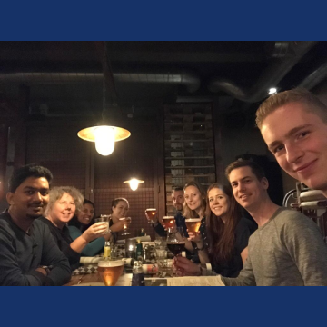
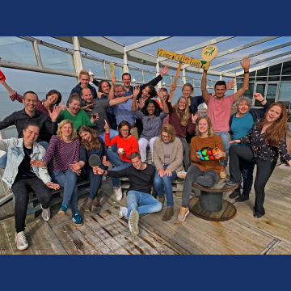

-
Study and Experience
Making a User Friendly design.
I am a student who follows the major Communication and Multimedia Design. Right now I’ve finished my third year and I’m heading into the last year of my Major. In this major I’ve learned a lot about Interaction Design, User Experience Desig, Visual Design and Programming with HTML, CSS and Javascript. I’ve also followed two minors. One about Photography and another one about Visual Design & Front-End development. Last year I also had an internship at the ANWB as a User Experience Designer. Here I worked on improving the User Experience of the ANWB Onderweg App.
-
Hobby’s
Developing websites
I love to go to the Fitness. Right now I’ve been going a lot to the gym for about a year. I made a lot of progress and I’m really happy about that. It is worth it to work hard. Staying healthy also requires healthy food. I love it to cook my own healthy food. I also love it to watch movies, series and I’d like to game a lot. This is also probably the reason I’d went for the study CMD. Games create a lot of creativity in the mind. That was one of the reasons how I discoverd that I love being creative.
- 
- 